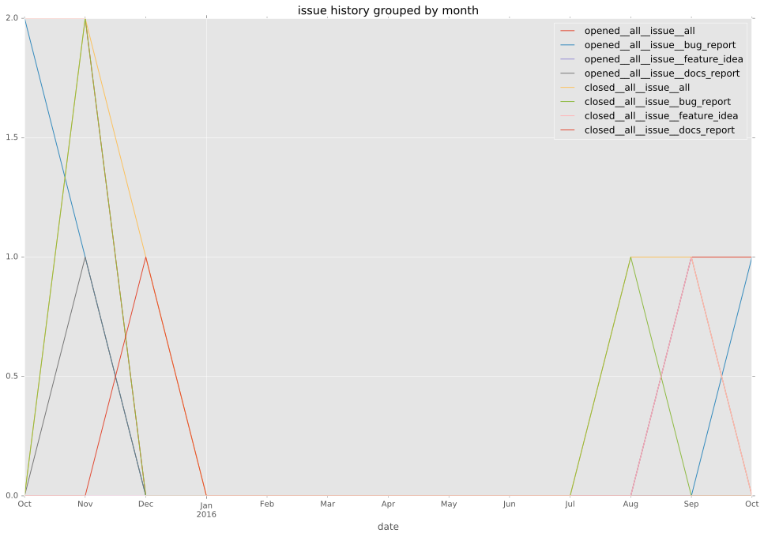
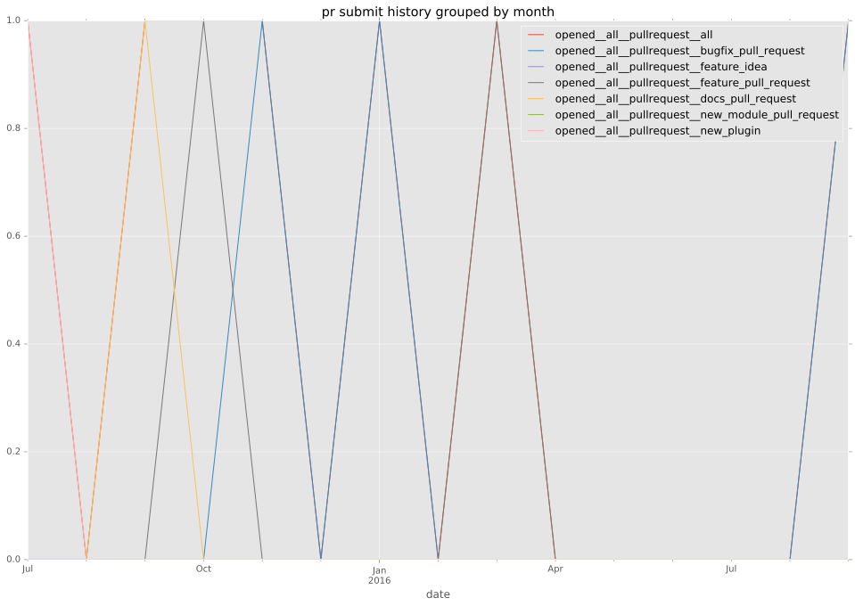
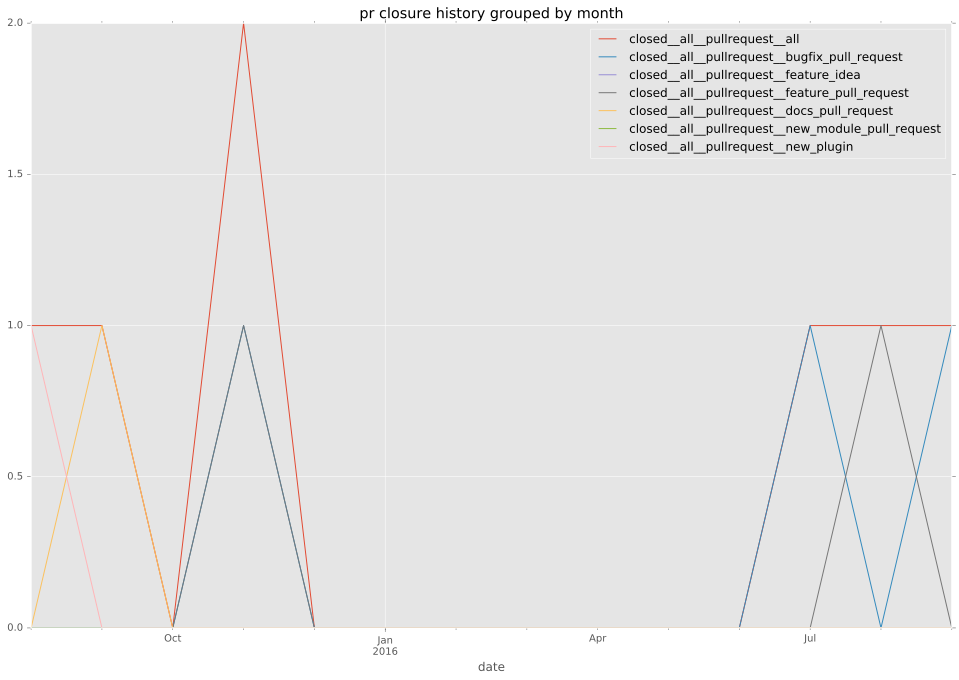

authors
- michaeljs1990
maintainers
- michaeljs1990
- wimnat
contributors
- wimnat : 35 commits
- michaeljs1990 : 21 commits
- abadger : 15 commits
- Constantin07 : 2 commits
- hslee16 : 1 commits
- chrrrles : 1 commits
total issue counts
bugfix pull request: 3
docs report: 1
pullrequest: 11
docs pull request: 1
feature pull request: 5
feature idea: 1
issue: 6
new plugin: 2
bug report: 4
issue history

pullrequest history


days open by issue type
feature pull request
count: 6
std: 65.1933023145
min: 20
max: 159
median: 92.5
mean: 87.1666666667
all
count: 21
std: 85.3906150748
min: 0
max: 284
median: 20.0
mean: 66.5714285714
pullrequest
count: 0
std: nan
min: nan
max: nan
median: nan
mean: nan
docs pull request
count: 2
std: 0.0
min: 0
max: 0
median: 0.0
mean: 0.0
docs report
count: 1
std: nan
min: 5
max: 5
median: 5.0
mean: 5.0
bugfix pull request
count: 5
std: 90.382520434
min: 0
max: 166
median: 3.0
mean: 67.0
feature idea
count: 1
std: nan
min: 1
max: 1
median: 1.0
mean: 1.0
issue
count: 0
std: nan
min: nan
max: nan
median: nan
mean: nan
new plugin
count: 3
std: 100.458946839
min: 13
max: 187
median: 13.0
mean: 71.0
bug report
count: 3
std: 153.71727294
min: 7
max: 284
median: 30.0
mean: 107.0
closures grouped by total days open